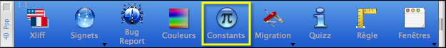
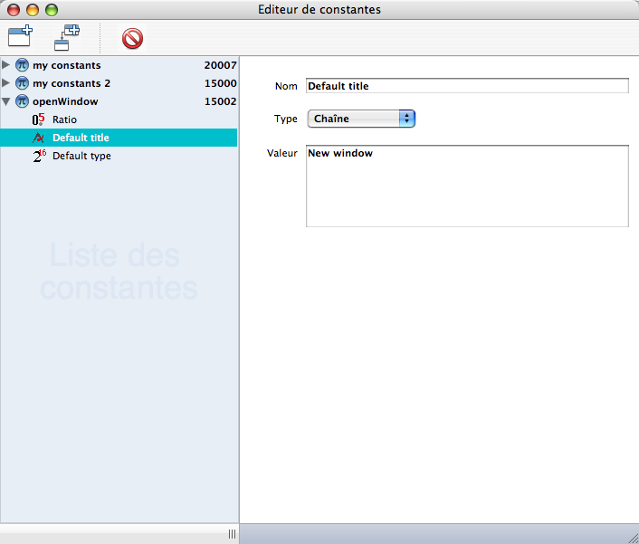

|
|
||||
|
|
||||
4DPop Constant Editor makes it possible to create and publish personalized constants.
Place the folder "4DPop Constant Editor.4dbase" or an alias of this folder into the folder "Components" near your database structure.
If you use the component "4DPop", the tool "Constants" is displayed automatically in the Tool bar.

You access the editor while clicking on the tool.
You also can launch manually the editor by executing the method "Constant_Editor" through the menu "Execute > Method..."

Les constantes créées et éditées sont celles présentes dans le plugin "User Constants.bundle" (cf. 4D_v11_Mise_A_Jour.pdf).
Si le plugin n'est pas installé, il le sera automatiquement si vous créez des constantes.
La liste de gauche de l'éditeur présente les constantes personnalisées regroupées par thème. La sélection d'un item permet d'éditer ses propriétées dans la partie droite de la fenêtre.
Les boutons de la barre d'outils permettent respectivement de gauche à droite : de créer un thème, d'ajouter une constante à un thème ou bien de suprrimer l'élement sélectionné.
Les items du menu Fichier permettent d'ajouter un thème, une constante ou d'importer des constantes depuis un fichier.
Ce composant est fourni en version compilée, mais vous trouverez le code source dans le dossier "SOURCES" à l'intérieur du dossier du composant.